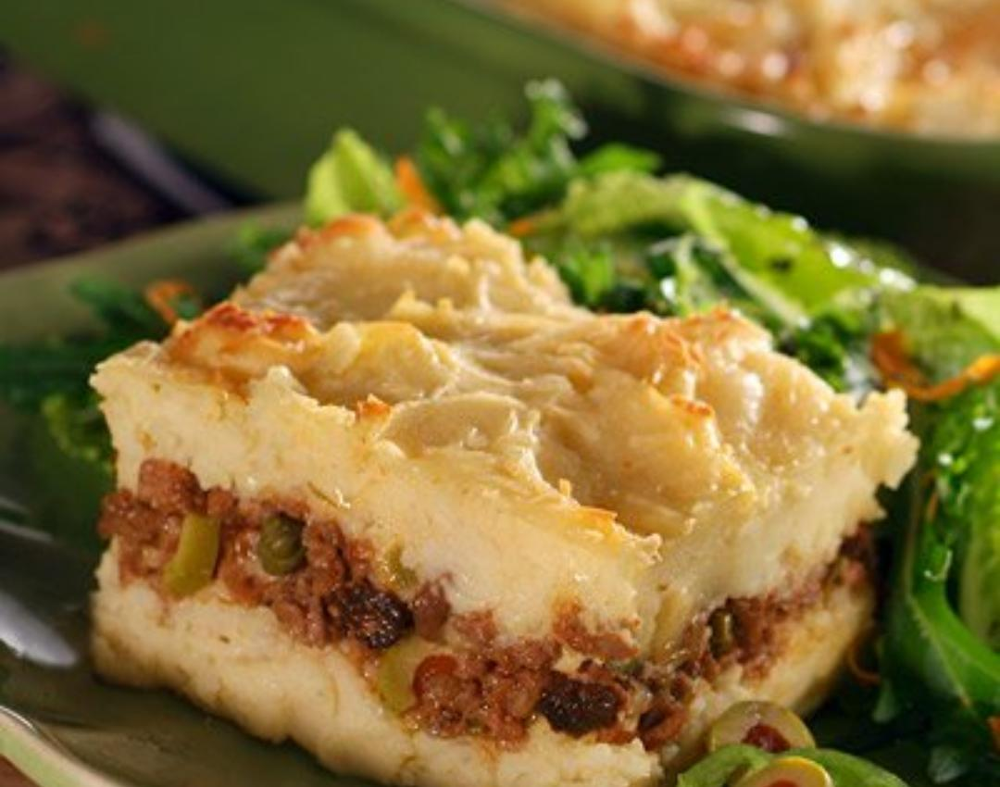

PASTEL DE PAPA

Pasos:
-
HACER EL PURE:
Herví las papas peladas y cortadas en cubos en agua con sal hasta que estén bien tiernas. Escurrilas y, mientras sigan calientes, pisalas junto con la manteca, el chorrito de leche y los condimentos hasta lograr un puré liso y firme. Reserva
-
COCINAR EL RELLENO:
En una sartén con un poco de aceite, sofré la cebolla y el morrón picados en cubos pequeños. Cuando estén tiernos, incorporá la carne picada y cocinala hasta que cambie por completo de color. Condimentá a gusto con sal, orégano y abundante pimentón
-
ARMAR EL PASTEL:
En una fuente apta para horno (podés untarla con un toque de manteca), distribuí primero todo el relleno de carne. Si te gusta, sumá por encima rodajas de huevo duro o cubos de queso cremoso. Cubrí todo con la capa de puré de papas de manera uniforme
-
GRATINAR AL HORNO:
Espolvoreá la superficie con queso rallado o agregá unas láminas de queso por encima. Llevá la fuente a un horno precalentado fuerte (unos 200°C a 230°C) durante 20 a 30 minutos hasta que la cubierta esté bien dorada, crocante y el queso se haya derretido